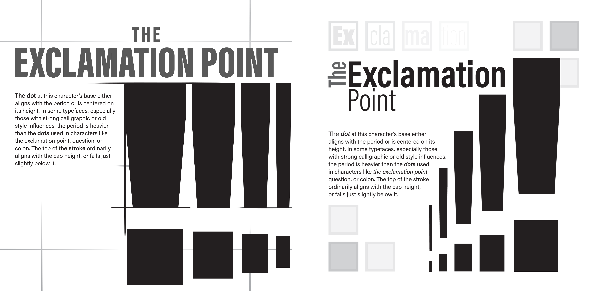

Projects
Tiger’s Mark Printing Company

The objective of this project was to create a marketing campaign for a print company. The first step in the process was to brainstorm a company and create a brand guide, including colors, fonts, and logos. Above is a large mock-up showing all the projects that I created in this class: folder, brochure, variable data mailer, business card, and poster.

The next steps involved applying the created brand guides to make different printed pieces. Above is the inside and outside of the tri-fold brochure that I created, following the brand guides that I also developed.

This project further improved my understanding of advertising and of the print world. I now know the importance of brand guides and having structure in marketing.
Fall 2025
Coffee Packaging

This project combined with a prior project, utilizing a global issue that was chosen, and incorporating it into a coffee brand. This required creating a brand story and purpose, and displaying that through the design of the brand.
The process started by creating the brand name, mission, and colors. After these were finalized, it was time to start drawing thumbnail ideas for logos. The last step for this project was to combine everything and create the final packaging.

This project helped reinforce the importance of unity and purpose in product design, as well as any other area of design.
Fall 2024
The Exclamation Point

The objective of this project was to use different kinds of grids to understand the positives and negatives of them, as well as to understand the importance of alignment and measuring. The process began by creating thumbnails of different ideas for each of the grid layouts. Once a specific thumbnail was chosen it was then created on Adobe InDesign, assuring that it followed the assigned grid as much as possible.
The grid used on the left is a modular grid with no gutter space, consisting of grid boxes which sit up right next to each other. The grid used on the right is also a modular grid, but it has a twelve-point gutter between each module in both row (horizontal), and column (vertical).

This project improved my knowledge of grids and their importance to guide the eye of the viewer, as well as maintain unity.
Spring 2025
Mockups

The objective of this project was to create custom emojis and place them on mockups. The process involved having to brainstorm many versions of a decided route for emojis. Once thumbnails for emojis were created, they were critiqued and narrowed down to the final ten, which were then created digitally and revised.

The objective of this project was to find a movie poster and re-create it using different adobe tools. The process of this project first involved selecting a movie poster, followed by recreating it using different tools in Adobe Illustrator and Photoshop. Once finished, I then placed the poster on mockups to display what it would look like in different environments.

The objective of this project was to create night and day variants of billboards for a company of choice using their brand guide. This project involved having to research the brand and brand guide, using resources from the guide to design a billboard, which was then placed on a mockup and edited to appear as if it fits in the environment.
These projects helped to jumpstart my knowledge of branding, mockups, and much more. They were a few of the first design projects that I completed.
Fall 2024
How Tomorrow Might Look

The objective of this project was to imagine and create a website that might exist in the future. The process involved creating a persona in a future time period. The persona would have desires and problems that need fixed. This provides someone who can be the focus of the design process for a website. Once these needs were discovered, I came up with ideas for a website that would be helpful for this persona, keeping in mind that it would be a website many years in the future.
Once the idea for the website was chosen, I designed what I thought that website might look like.
Fall 2025
Personas

The objective of this project was to observe and learn from the community at the Dayton Metro Library's Northwest branch. This project involved multiple methods of research: Observation, Interviews, and a Collaborative Activity. The first method, observation, involved studying different spaces inside the library and the people that used them. After observation, we then interviewed several people, asking questions about the library. We asked if they came to the library frequently, if they felt comfortable there, why they came to the library, and more. This step helped greatly, revealing hidden needs, feelings, and concerns of the community. For the last method, we invited the community to take part in a group collage activity, piecing together different photos to represent their idea of the community of the library. Once these all were completed, we compiled all of the information we gathered, fitting each quote or idea into categories to show how the community feels overall. We then used all this information to create four personas that represent the people or the ideas that were shared. These personas encapsulate the people we interviewed and observed in our time at the library.

These personas, and the research used to create them, helped to give the library a new perspective of the people that go there and what the library could possibly improve or take into consideration.
Spring 2026
Webpage - Sinclair Hub

The objective of this project was to create a website to help a persona representing a group of people. This project also involve several steps of prototyping, digitally and physically. These prototypes were tested by other students who were not familiar with the class, making sure that the prototypes could be easily navigated.
This project helped to demonstrate the importance of prototyping and testing usability, making sure that each webpage is easy to navigate.
Click here to try out the prototype.
Spring 2026